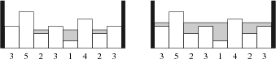

DAY5-岛
原题链接
题目描述
每当下雨时，农夫约翰的田地总是被洪水淹没。
由于田地不是完全水平的，所以一些地方充满水后，留下了许多被水隔开的“岛”。
约翰的田地被描述为由 $N$ 个连续高度值 $H_1,\ldots, H_N$ 指定的一维场景。
假设该场景被无限高的围墙包围着，请考虑暴雨期间发生的情况：
最低处首先被水覆盖，形成一些不连贯的岛，随着水位的不断上升，这些岛最终都会被覆盖。
一旦水位等于一块田地的高度，那块田地就被认为位于水下。

上图显示了一个示例：在左图中，我们只加入了刚好超过 $1$ 单位的水，此时剩下 $4$ 个岛（最大岛屿剩余数量），而在右图中，我们共加入了 $7$ 单位的水，此时仅剩下 $2$ 个岛。
请计算，暴风雨期间我们能在某个时间点看到的最大岛屿数量。
水会一直上升到所有田地都在水下。
输入格式
第一行包含整数 $N$。
接下来 $N$ 行，每行包含一个整数表示 $H_i$。
输出格式
输出暴风雨期间我们能在某个时间点看到的最大岛屿数量。
数据范围
$1\leq N\leq 10^5$,
$1\leq H_i\leq 10^9$
输入样例
1 | 8 |
输出样例
1 | 4 |
题目分析
首先，如果按顺序枚举每个柱子肯定是不行的，这样的话每次得找到最低的柱子，然后考虑小岛个数变化，这样复杂度是 $O(n^2)$ 的。因为雨水是按照同一水平面上升的，可以按照柱子的高度从低到高枚举，然后判断小岛数量变化。
分析可以发现，对于每个柱子淹没前后，小岛个数变化可以分为以下四种情况：

其中只有三四两种情况，才会使小岛数量发生变化，所以我们只考虑三四两种情况。这样每次枚举可以 $O(1)$ 得出数量变化。
存在一种情况需要考虑，就是连续相邻的柱子高度都相同，这种情况下数量变化与上述情况一样，但是最坏情况下需要枚举 $n$ 次，使复杂度从 $O(1)$ 退化至 $O(1)$，所以我们需要采用离散化的思想，将相邻的相同高度的柱子去重。
另外存在一种情况，即不相邻但具有相同高度的柱子，如果存在这种情况，我们则不着急更新答案，每次只更新相同高度柱子中的最后一个，这样就能保证所有柱子的情况都考虑到了。

完整代码
1 |
|